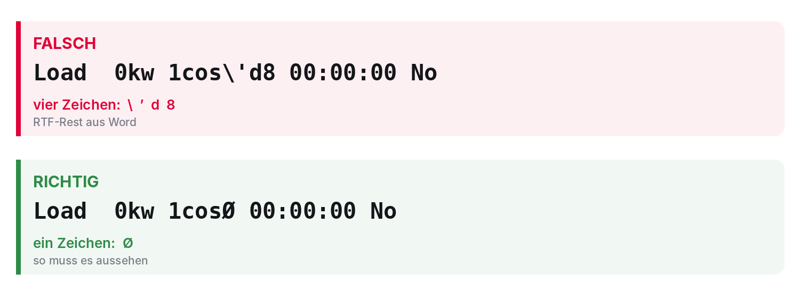
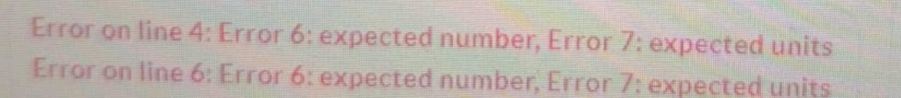
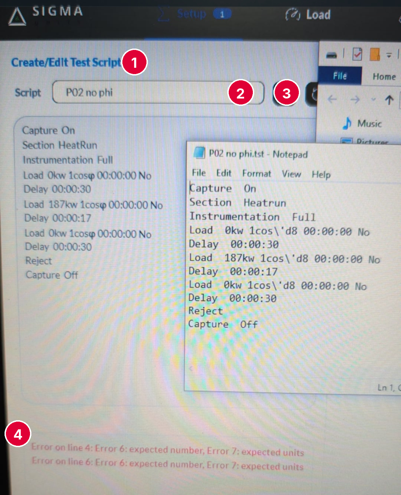

| Datei | Load-Zeile darin | Was sie testet |
|---|---|---|
| T1 | 1cosØ 00:00:00 | Nur das Zeichen repariert, sonst alles wie bisher |
| T2 | 1cosØ 0 | Zusätzlich vierter Wert als Zahl wahrscheinlichster Treffer |
| T3 | 1.0cosØ 0 | Zusätzlich 1.0 statt 1 |
| T4 | 1.0cosØ 00:00:00 | 1.0 und wieder die Zeitschreibweise |
| T5 | wie T2 | Datei als UTF-8. Nur wenn T1 bis T4 scheitern |
| T6 | wie T2 | Datei als UTF-8 mit BOM |